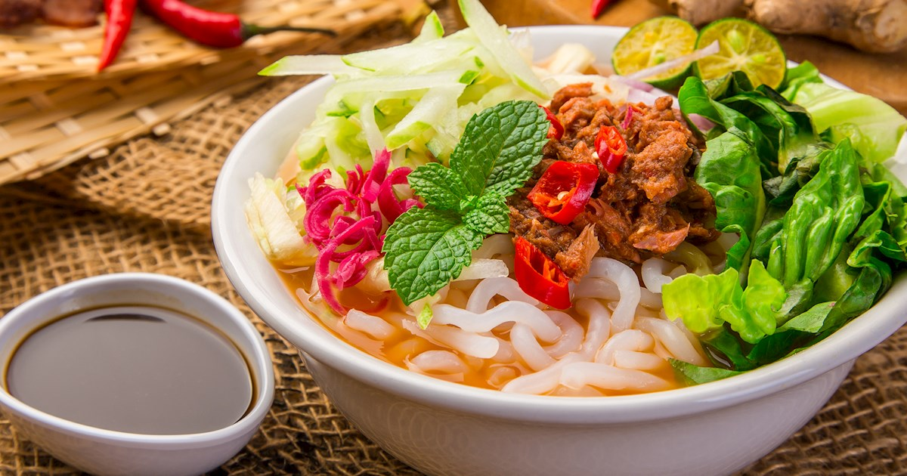

Laksa Penang

Description
Laksa Penang is a sour savoury dish with rice noodles and a fish-based broth. It has been my all-time favorite food and nothing can come close to it.
There are many variations of this recipe which mainly depends on the type of fish used to make the broth. This page will describe the most common way of cooking this dish.
Ingredients
- Mackerel or Canned Sardines
- Torch Ginger Bud
- Dried Tamarind
- Hae Ko
- Shrimp Paste
- Rice Noodles
Steps
- Blend all the spices and herbs with a bit of water.
- Bring 10 cups of water to boil and boil the mackerel fish for 10 minutes.
- Once cool enough to handle, flake the fish meat and set aside, save the bones and head. If you are using canned mackerel, they are already cooked and you can skip this step
- Add the ground spices and herbs, fish bones, and the rest of the ingredients for soup base.
- Bring it to a boil and then lower the heat, cover the pot with a lid and let it simmer for 30 minutes.
- Turn off the heat and then strain the stock and discard all the solids.
- Stir the flaked fish back into the soup or canned sardines if using that. Season the soup base with seasonings and adjust to your taste. The soup should be sour, sweet, lightly spicy, and with just hint of savory. Add more sugar as needed.
- Serve.